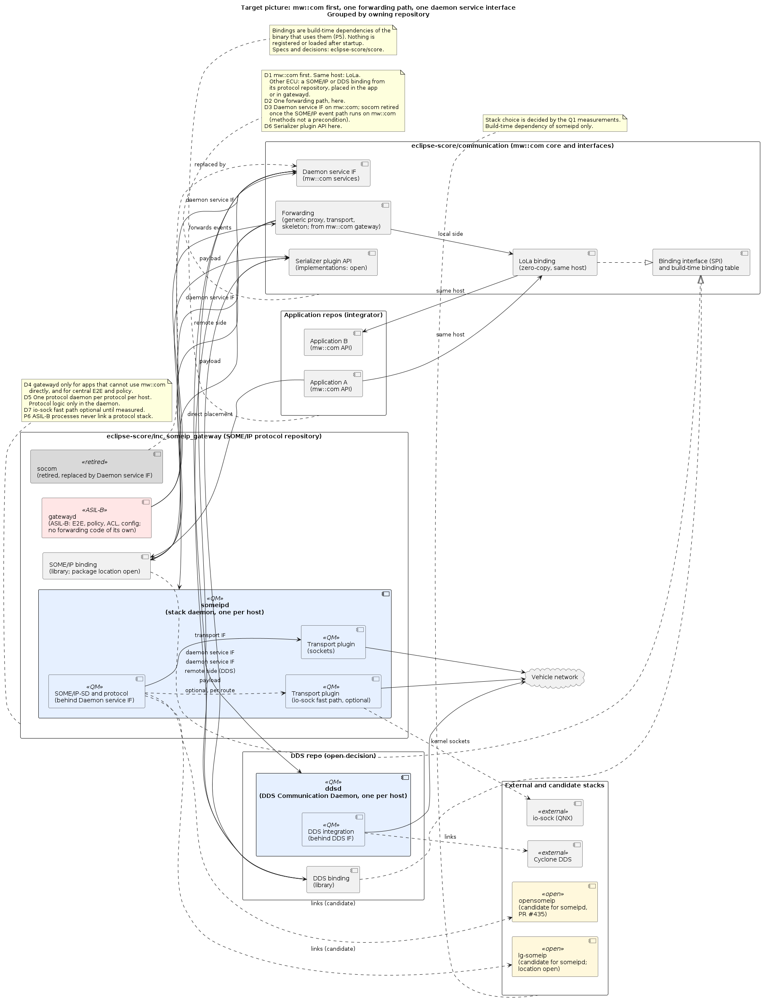

DR-010-arch: Target architecture for SOME/IP and DDS on mw::com#
Date: 2026-11-17
Target architecture for SOME/IP and DDS on mw::com
|
status: proposed
|
||||
Summary#
Today: SOME/IP and DDS support is split over three repositories. Forwarding and the service model exist twice,
socomduplicatesmw::com, and a prototype bypasses both.Target: applications use
mw::comonly. Same-host traffic uses LoLa. Remote traffic uses a SOME/IP or DDS binding, which lives in its protocol’s repository and is built into the application or intogatewayd. Each protocol has one daemon per host that holds the wire protocol. Forwarding exists once, incommunication.socomis retired.Decided by this record: the target picture (D1 to D7), who owns what (Responsibilities) and the order of work (Implementation Plan).
Not decided here: the SOME/IP stack for
someipd(lg-someip or opensomeip, Q1) and the io-sock fast path (Q2). The measurements in Evidence Required decide them.Safety boundary: QM daemons and the io-sock path never sit in an ASIL data path.
gatewaydand ASIL bindings run in ASIL-B processes.
Glossary#
Term |
Meaning in this record |
|---|---|
|
S-CORE’s service-oriented communication API, in the |
LoLa |
The |
Binding |
The part of |
Binding interface (SPI) |
The interface every binding implements, owned by |
Daemon service interface |
The |
SOME/IP |
Automotive service protocol over IP networks; SD is its service discovery |
DDS |
Data Distribution Service, a data-centric publish/subscribe standard |
|
Stack daemons, one per protocol per host, holding the wire protocol |
|
The gateway process on the ASIL-B side; hosts bindings for applications that cannot use |
QM, ASIL-B |
Safety levels: QM is no safety requirement, ASIL-B is a safety requirement of the automotive standard ISO 26262 |
E2E |
End-to-end protection of a message (counter, CRC, identifier) checked by the receiver |
io-sock |
The QNX network stack process into which the prototype’s kernel module is loaded |
socom |
The gateway’s current service layer, retired by this record |
TC8 |
The SOME/IP conformance test suite that the gateway runs |
Direct placement |
The binding runs inside the application |
Gateway placement |
The binding runs inside |
FEP, FCP, Shepherd |
The feature proposal process: an author’s proposal, a 10-day final comment period, and the Architecture Community member who guides it (DR-002-Proc) |
Context / Problem#
S-CORE applications use mw::com as their service-oriented API. LoLa provides
zero-copy shared-memory communication on the same host. Remote communication
needs a SOME/IP binding (for ECUs running SOME/IP) and, per DR-009, a DDS
binding (for DDS domains).
Today the implementation is spread over three repositories and does not yet form one picture:
eclipse-score/communicationholds themw::comcore. Its SOME/IP binding is a skeleton without a transport: service discovery returnskInvalidBindingInformationwith TODOs, and event sending returnskBindingFailure(“unsupported without a transport”). The binding list is a closed enum (BindingType) and the runtime factory creates runtimes from a fixed list, so a new binding requires a code change and a rebuild. It also contains a LoLa-to-LoLa gateway (score/mw/com/gateway) that forwards events between domains with aGenericProxy, aTransportinterface and aGenericSkeletonon the destination side.eclipse-score/inc_someip_gatewayholdsgatewayd(ASIL-B),someipd(QM),socom,gateway_ipc_bindingand a serializer. Thegateway_ipc_bindingpackage forwards events across thegatewayd/someipdprocess boundary with the sameGenericProxy/GenericSkeletonpattern as the communication gateway.socomis documented as intra-process only; it is bridged across processes bygateway_ipc_binding. The forwarding pattern and the service model are therefore implemented twice.gatewayddoes not yet implement E2E protection; the code has only comments.Prototype (
communication/experimental/someip_sd) adds an SD-only daemon, a custom control protocol overscore::message_passing, and an io-sock kernel module that moves SOME/IP event payloads outside the daemon. The module is declared QM, has no E2E, runs the LoLa runtime inside the io-sock process, and cannot be unloaded.
The gateway is still in active use and is the only place where ASIL-B
processing is planned. The gap is not a missing gateway; it is that the
gateway duplicates forwarding and a service model that mw::com already
provides, and that the stack and binding boundaries are not defined.
The generic mw::com proxy and skeleton carry events and fields only; they have
no method API. socom has a method API, but the SOME/IP path does not use it:
someipd (remote_network_service.cpp) and gatewayd (local_service_instance.cpp)
both implement on_method_call as a handler that returns no invocation, and
gateway_ipc_binding forwards no method calls. Methods are therefore not part of
the SOME/IP path today.
Decision#
S-CORE adopts the following target architecture for SOME/IP and DDS on
mw::com. The component view is shown below and the source is kept next to
this record as _assets/DR-010-arch-target_component.puml.

D1 — mw::com first. Applications use the mw::com API only. Applications
on the same host communicate through the LoLa binding. Applications on another
ECU communicate through a SOME/IP or DDS binding. The binding is implemented in
the repository of its protocol owner (see Responsibilities) and runs either in
the application (direct placement) or in gatewayd (gateway placement).
D2 — One forwarding path. Forwarding between a local mw::com service and a
remote binding is implemented once, in communication, generalised from the
existing LoLa gateway. The forwarding code in gateway_ipc_binding is retired.
D3 — socom is retired. The daemon contract between a binding and a stack
daemon is defined as mw::com services (the daemon service interface). socom
is removed once the daemon service interface and the SOME/IP event path run on
mw::com, including a SOME/IP header followed by the payload in one generic event
slot (see Dependencies). Methods are not a precondition, because the SOME/IP path
does not use them. Method support in mw::com is added later, with its own
requirement and issue.
D4 — gatewayd has a narrow role. gatewayd is used for applications that
cannot use mw::com directly (legacy LoLa applications, native DDS peers) and
for functions that need an ASIL-B host: E2E protection, policy and access
control. gatewayd contains no forwarding code of its own.
D5 — One stack daemon per protocol per host. someipd holds the SOME/IP
protocol and service discovery. ddsd holds the DDS participant and DDS
transport. Protocol logic lives only in these daemons. The bindings talk to a
daemon through the daemon service interface and never link a protocol stack.
D6 — The serializer is a shared plugin. A serializer plugin interface per
service type is used by all bindings and by gatewayd. A null serializer passes
pre-serialized payloads through unchanged. The location of the implementation
is decided in a follow-up record.
D7 — The io-sock fast path is optional. A kernel-side transport can be added
as a transport plugin of someipd, behind the same interface. It is not part
of any ASIL data path. It is enabled only if a measurement shows a material gain
over the daemon path on target hardware.
The following are not part of the target:
a kernel module in an ASIL data path;
an
mw::comruntime inside a kernel module or inside the io-sock process;a second SOME/IP daemon, or a second SOME/IP stack in applications;
a new gateway repository.
The choice of SOME/IP stack for someipd (lg-someip, or opensomeip hosted inside
someipd) is not decided here. It is decided on the measurements
in the Evidence Required section. The location of the stack source (dependency
or in-tree) is decided with it.
Responsibilities#
Principles#
P1 — The core and the contract live in communication. communication holds
the mw::com API, the LoLa binding, the binding interface (SPI), the build-time
binding table, the forwarding API, the serializer plugin API and the definition
of the daemon service interface. It holds no protocol implementation and no
protocol daemon.
P2 — One repository per protocol family, not per binding or per stack. The number of bindings grows with the number of protocols (SOME/IP, DDS, and any future protocol), not with the number of stack variants. Stack variants (lg-someip, opensomeip, Cyclone DDS) sit behind a daemon (D5) and never add a binding. This keeps the number of repositories and bindings bounded.
P3 — The owner of a protocol owns its binding, daemon and tests. The protocol owner maintains the binding, the daemon, the stack integration, the protocol conformance tests and the safety analysis of the protocol path.
P4 — Shared interfaces change through a FEP. The binding interface, the daemon service interface, the serializer plugin API and the forwarding API are shared across feature teams. A change to any of them is cross-team and requires a FEP with a Shepherd and a final comment period, as defined in DR-002-Proc.
P5 — Dependencies point one way. A binding depends only on the interfaces
published by communication. communication never depends on a protocol
repository and lists no binding as a dependency. A protocol repository never
depends on another protocol repository. A binding is a build-time dependency of
the binary that uses it (an application, gatewayd or a test), not of
communication.
P6 — ASIL-B logic runs only where the safety concept places it. gatewayd
and ASIL-classified bindings run in ASIL-B processes. A QM daemon never links
ASIL-B code, and an ASIL-B process never links a protocol stack (D5).
Ownership#
Area |
Owner |
Repository |
Owns |
Does not own |
|---|---|---|---|---|
|
Communication FT |
|
The interfaces and their conformance tests |
Protocol logic, daemons, stacks |
SOME/IP protocol: |
SOME/IP gateway FT |
|
The SOME/IP protocol path end to end |
The binding interface |
|
SOME/IP gateway FT |
|
ASIL-B processing of routes |
Forwarding logic (in |
DDS protocol: |
DDS FT, to be created |
DDS repository, to be decided |
The DDS protocol path end to end |
The binding interface |
Serializer implementations for each service type |
To be assigned |
To be decided |
Generated or hand-written payload serializers |
The serializer plugin API |
External stacks: lg-someip, opensomeip, Cyclone DDS |
Owner of the daemon that uses them |
Dependency, not a repository of S-CORE |
Version pinning, licence review, updates |
Anything else |
Performance evidence (T1 to T8) |
SOME/IP FT for the protocol path; Communication FT for |
Both |
The results of tests T1 to T8 |
— |
Decision records |
Architecture Community, with the leads of the affected feature teams |
|
The records |
— |
Rules for a new binding#
A binding is added per protocol family, never per stack variant. Stack variants of an existing protocol are integrated in its daemon.
A new protocol gets one owner (a feature team), one repository, and a binding that passes the binding conformance tests from
communication.The repository is created through a FEP, because it is a platform-level change.
The set of bindings in a binary is fixed at build time. The binding is linked into the binary that uses it, and a generated table lists the bindings that binary contains. At startup, the binding runtimes are created only for bindings in that table, selected by the deployment configuration. Adding a binding needs no change to the
mw::comcore. Nothing is registered, loaded or allocated for a binding after startup (allocation is allowed at startup and shutdown only, as agreed in the SOME/IP gateway meeting minutes of 2026-03-31). Today the binding type is a closed enum and the runtime factory a fixed list (see the binding selection row in the inventory); Phase 2 replaces both with the build-time table.
Future feature team structure#
Now: two feature teams: Communication (core and interfaces) and the SOME/IP gateway (protocol path,
gatewayd).Next: a DDS feature team owning the DDS repository, the DDS binding and
ddsd. Until it exists, the DDS feature request authors coordinate the DDS work, and the DDS binding stays out ofcommunication.Rule: one feature team per protocol family, plus the core team. The number of feature teams therefore grows with protocols, not with bindings or stacks.
Open points#
Owner and repository of the DDS protocol path.
Repository of the SOME/IP protocol path: the incubation repository
inc_someip_gateway, or a repository of its own after promotion.Owner of serializer implementations, and their relation to the code generation feature.
Where the SOME/IP binding is built. It is needed by the gateway and, for direct placement, by applications. If it is part of the
inc_someip_gatewayrepository, applications depend on the gateway repository; a package of its own avoids that.How a binding proves conformance to the binding interface: a test suite in
communicationthat each protocol repository runs in its own CI.
Implementation Plan#
The work follows six phases. Each phase ends with an exit check, and a later phase does not start until the earlier exit check is met.
Phase 0 — Decide. The Architecture Community accepts this record and the
follow-up records (stack choice, fast path, serializer location, DDS daemon
repository, SOME/IP binding location, conformance test suite). The record supersedes DR-001 in inc_someip_gateway.
Exit: decision records accepted.
Phase 1 — Evidence. Run the verification tests (T1 to T8, defined in Evidence
Required) for lg-someip
and opensomeip, each hosted inside someipd, on the same hardware, and the
fast-path test T5.
Exit: results published; Q1 and Q2 decided from them.
Phase 2 — Foundation in communication. A build-time binding table, so that
a binding can be added without a change to the mw::com core; forwarding
generalised from the LoLa gateway; the serializer plugin interface; the daemon
service interface as mw::com services; and the header-plus-payload spike (see
Dependencies). Exit: a test binding is added without changing the mw::com core,
forwarding passes its tests with one transport, and the spike passes.
Phase 3 — SOME/IP path. someipd runs on the chosen stack and offers the
daemon service interface. The SOME/IP binding uses it as transport.
gateway_ipc_binding forwarding is replaced by the shared path. socom is
removed once the SOME/IP path runs on the daemon service interface. Exit: the gateway path with E2E (T4) and
TC8 conformance (T1) pass on the new path.
Phase 4 — Gateway safety and direct placement. E2E protection implemented
in gatewayd. Direct placement: the same E2E check runs in the application’s
binding for ASIL applications. Safety review of the QM/ASIL boundary and of the
daemon interface. Exit: safety review passed; fault-injection test T6 passed.
Phase 5 — DDS. ddsd and the DDS binding, using the same daemon service
interface and serializer. Exit: a native DDS peer interoperates with an mw::com
application through the gateway.
Phase 6 — Optional fast path. Only if Q2 is positive. Lives in someipd as
a transport plugin, never in an ASIL data path.
Dependencies#
Build-time binding table in
mw::com(Phase 2): needed before a new binding can be added without a core change.Header and payload in one generic event slot: the generic event API gives a writable slot of fixed size per event (
GenericSkeletonEvent::Allocate), so a SOME/IP header followed by the payload fits, with the length encoded in the bytes. This is not yet tested with the gateway’s header layout. A spike in Phase 2 must pass beforesocomcan be removed.Generic methods are not a dependency. No issue in
communicationtracks them (communication#767is about nested method calls inside callbacks and does not cover generic methods).Decision on the repository for the stack source and the DDS daemon: needed in Phase 0.
Safety evidence for lg-someip: LG reports a qualification for its AUTOSAR variant, not for the open-sourced code (Phase 4). The record makes no compliance claim for any stack.
Risks#
Risk |
Mitigation |
|---|---|
The header-plus-payload spike fails |
Keep |
lg-someip open-source code is not safety-qualified |
Qualification plan in Phase 4; keep both candidates under evaluation until the qualification path of the chosen stack is known |
opensomeip gaps (port sharing, SD for several applications, event fan-out) must be closed inside |
Estimate the work in |
Defects found late in the open-sourced stack (undefined behaviour and framing bugs were fixed after its public release) |
Sanitizer runs in Phase 1 (T7) |
Two teams own parts of one path ( |
Interfaces fixed in Phase 2 before implementation |
Benchmark numbers come from the stack proponent |
Phase 1 measures on our hardware |
Not part of the target#
A kernel module in an ASIL data path.
An
mw::comruntime inside a kernel module or the io-sock process.A second SOME/IP daemon.
A new gateway repository.
Changes to application code for SOME/IP or DDS.
Evidence Required#
Two decisions depend on measurements: Q1, the stack for someipd, and Q2, the
io-sock fast path. The LG slides are hypotheses to check, not evidence: they
measure opensomeip without SD and daemon on Raspberry Pi 4, and nothing in them
has been reproduced on our hardware.
ID |
Question |
Decides |
|---|---|---|
Q1 |
Which stack runs in |
Follow-up record 1 |
Q2 |
Is the io-sock fast path worth a second data path next to the daemon? |
Decision D7 |
Q2 depends on Q1: the fast path must beat the daemon path of the stack that is chosen.
Verification tests#
Test |
Covers |
Measured by |
|---|---|---|
T1 |
TC8 conformance of each candidate |
|
T2 |
Multi-application host: port sharing, SD visibility, fan-out |
Functional test, run set R5 |
T3 |
Target performance of the candidates |
Run matrix R1 to R4 |
T4 |
Gateway path with E2E checked on the ASIL side |
|
T5 |
Fast path against the daemon path |
Run sets R1 and R2, variant A against B or C |
T6 |
Fault injection on the QM/ASIL boundary: stack process killed, corrupted payloads, flooding |
Fault-injection test, to be built |
T7 |
Sanitizer runs (ASan, UBSan, TSan) of each candidate stack |
Sanitizer build of each candidate |
T8 |
Build and maintenance: QNX SDP build, dependencies, licence obligations |
Build and licence review |
What exists#
The benchmark harness in communication/experimental/someip_sd/benchmark
already measures:
Round trip over the io-sock path:
someip_bench_lola, with the reflector on lg-someip. Output per run: p50, p90, p99, p999, loss and duplicates.Mixed load from a realistic event mix (
someip_event_workload.csv):someip_load_lolaandsomeip_load_peer, withLOAD_RESULTandCPU_RESULTandload_report.py --comparefor two runs.Hardware scripts:
run_hw_load.shruns the whole flow on IPNext hardware, with--stack iosock.
What does not exist: a benchmarked side for lg-someip inside someipd, or for
opensomeip inside someipd. The wire contract (bench_protocol.h) is independent of
the stack, so these are new applications with the same options and output
format.
Fairness problems to fix first#
Polling. The module polls every ~10 ms, so its latency is dominated by polling (p50 about 17 ms on QEMU). A daemon path with event-driven wake-ups would look worse for a reason that is not the architecture. Fix: event-driven wake-ups (the
iosock_wakeup_spikeis the starting point) before the Q2 runs. If that is not possible in time, report the polling penalty separately and do not decide Q2 from latency.Zero-copy threshold. TX copies payloads up to 2 KB; above that the mbuf keeps the LoLa sample until the driver frees it. Report 16 B and 1400 B separately.
Peer. The round-trip reflector is lg-someip for every candidate. The peer stays fixed for all candidates, and the results say so.
Unloadable module. The io-sock module cannot be unloaded. Restart io-sock or the target before each io-sock variant, and never run two bundles in one boot.
CPU definition. CPU per event or request is the CPU of all target processes on the path (module, daemon, application), divided by the number of events. The same definition is used for every candidate. The sampler needs root and read access to
/proc/<pid>/asof io-sock.Environment. Same hardware, CPU governor
performance, same SD settings and ports, same payloads, same workload file. QEMU results are functional checks only.
Variants measured#
The candidates for someipd are B (lg-someip) and C (opensomeip). Both run
inside someipd, behind the same daemon interface and the same host coordinator,
so they are measured on the same path. Variant D (opensomeip as a library in each
application, without a daemon) is an optional reference for the best case that
the stack proponent reports for small messages; it is not a candidate, because it
has no host-wide coordination (test T2).
Variant |
Path measured |
Status |
Used for |
|---|---|---|---|
A. io-sock |
app → LoLa → io-sock module → network |
exists |
Q2 |
B. lg-someip in |
app → binding → |
to build |
Q1, Q2 |
C. opensomeip in |
app → binding → |
to build |
Q1, Q2 |
D. opensomeip library, no daemon (optional reference) |
app → opensomeip → network |
to build, optional |
reference only |
Build list#
Fairness fix for variant A (item 1 above), or the reporting rule for it.
Two benchmark applications, B and C, that run through
someipd, and the optional reference D. Each reads the same options assomeip_bench_lola, uses the same wire contract and output format, and reusesgen_load_workload.pyfor the mixed load.One QNX target bundle per stack (Bazel), with the stack’s configuration.
Extend
run_hw_load.shwith--stack lgsomeipand--stack opensomeip, with the same arguments for both.Calibration: run the same variant twice under the same setup. The two results must agree within the spread of the repetitions; otherwise the setup is not comparable.
Run matrix#
Each cell is run five times, with the variant order rotated between repetitions. The target is restarted between variants. Results are reported as median and spread (min and max).
Run set |
Scenario |
Variants |
Measure |
|---|---|---|---|
R1 |
Round trip, 16 B and 1400 B, 100 Hz, 300 pings |
A, B, C, D |
p50, p99, loss |
R2 |
Mixed load, scales 0.25, 0.5, 1.0 |
A, B, C |
CPU per event, delivery, latency per class |
R3 |
Fan-out: 1, 2 and 8 subscribers on the target, 1 KB events |
A, B, C, D |
CPU per event, bytes on link |
R4 |
Footprint: peak RSS per process, stripped size |
A, B, C, D |
MB, KB |
R5 |
Multi-application host: three applications offer and consume on one host |
B, C |
Functional only: port sharing, SD visibility, fan-out (test T2) |
Decision rules (proposals, to be confirmed by the Communication FT)#
Q1 — stack for someipd
Eligibility, all required: TC8 conformance (T1) reported for each candidate and accepted by the Communication FT; host coordination passes (R5); no open undefined-behaviour or memory findings in sanitizer runs (T7).
Among eligible stacks, choose the lower p99 round-trip time at 16 B and 1400 B (R1), and the lower CPU per event in R2 at scale 1.0.
If the difference is below 10 % on all of these, the tie is decided by the qualification path and the maintenance cost. The proponent describes opensomeip as pre-1.0 with safety alignment ongoing and not certified, and reports a qualification for the AUTOSAR variant of lg-someip only. The record makes no compliance claim for either.
Q2 — io-sock fast path
Accept the fast path only if, compared with the daemon path of the stack chosen in Q1 (B or C):
p99 round-trip time improves by at least 20 % at 16 B and at 1400 B (R1), and
CPU per event improves by at least 20 % in R2 at scales 0.5 and 1.0, and
both improvements are larger than the spread of the repetitions, and
the latency comparison was made with event-driven wake-ups (item 1 above).
If any condition fails, the fast path is dropped (D7).
Commands#
Existing, on QEMU (functional check only):
bazel test --config=qnx_x86_64 //experimental/someip_sd/benchmark:someip_bench_dual_qemu_test \
--test_output=all --nocache_test_results
Existing, on IPNext hardware:
./run_hw_load.sh --stack iosock # variant A
Compare two runs:
python3 load_report.py --compare <A target results.txt> <A peer results.txt> \
<B target results.txt> <B peer results.txt>
Variants B, C and D follow once their bundles and --stack options exist.
Outputs and versions#
Raw results per variant, repetition and run set, in one directory per run.
A table per decision: median, spread, and the decision rule applied.
Versions of every component: this repository’s commit, the lg-someip commit
d09656e, the opensomeip version or commit (PR#435) and the QNX SDP version.Results are attached to the follow-up records for Q1 and Q2.
Risks and open points#
The io-sock module cannot be unloaded, so each io-sock variant needs a restart, which makes the runs slow.
The secpol rules for io-sock hosting LoLa are not defined yet. The secpol violations printed by
run_target.shmust be empty before the measurements count.Owners and dates are not set here. The Communication FT assigns them.
Component Inventory#
Every component found while preparing this record, with its current location, its disposition and its target location. Sub-components of a listed directory share its disposition unless listed separately.
Dispositions:
Stay: kept as it is.
Rework: kept, changed as described in Decision.
Move: kept, moved to another repository or directory.
Replace: removed and replaced by a new component.
Retire: removed once its replacement exists (see D3).
Drop: deleted; not carried forward.
Optional: kept only if the stated condition is met.
Open: depends on a decision in Follow-up records.
New: does not exist yet.
External: third-party dependency, not owned by S-CORE.
Communication (eclipse-score/communication)#
Component |
Current location |
Disposition |
Target location and note |
|---|---|---|---|
LoLa binding |
|
Stay |
Same-host zero-copy path (D1) |
SOME/IP binding (stub) |
|
Move |
Moves to the SOME/IP protocol repository; gets a transport through the daemon service interface (D1, D5). The binding interface stays in communication |
Binding selection |
|
Rework |
Bindings listed in a build-time table; no core change to add one |
LoLa gateway (inter-domain) |
|
Rework |
Generalised into the shared forwarding path (D2) |
Gateway transport interface and factory |
|
Stay |
Basis for the forwarding transport; hypervisor transports stay with the LoLa gateway |
Gateway README |
|
Rework |
Updated for the shared forwarding path |
Generalised gateway design |
|
Rework |
Updated to describe the shared forwarding path |
Component documentation |
|
Rework |
Follows the moves above |
|
|
Stay |
Not affected |
Serializer plugin API |
|
Move |
The plugin interface moves to communication (D6) |
Serializer implementations, including the null serializer |
|
Open |
Location decided by follow-up 3 (D6) |
Daemon service interface |
none |
New |
|
Shared forwarding |
partly in the LoLa gateway and in |
New |
One path in communication (D2) |
DDS binding |
none |
New |
In the DDS protocol repository, against the binding interface in communication (DR-009, Option B) |
Gateway (eclipse-score/inc_someip_gateway)#
Component |
Current location |
Disposition |
Target location and note |
|---|---|---|---|
|
|
Rework |
Uses the shared forwarding path; no forwarding code of its own; ASIL-B host (D4) |
E2E in |
not implemented (comments only) |
New |
Implemented in |
|
|
Rework |
Offers the daemon service interface; stack behind an interface (D5) |
SOME/IP stack in |
|
Replace |
Replaced by the chosen stack, lg-someip or opensomeip (follow-up 1); vsomeip is out of the candidate set |
|
|
Retire |
Removed once the SOME/IP path runs on the daemon service interface and the event path is verified in |
|
|
Replace |
Forwarding moves to communication; per-service logic replaced by the daemon service interface (D2) |
|
|
Rework |
Bridge configuration taken from the |
SOME/IP constants and types |
|
Stay |
Used by the daemon |
Gateway configuration schema |
|
Stay |
Gateway configuration |
Deployment |
|
Stay |
Packaging |
Integration tests |
|
Stay |
Adapted to the new path |
TC8 conformance tests |
|
Stay |
Verification T1 |
Benchmarks |
|
Stay |
Verification T3 and T5 |
Feature and component requirements (gateway) |
|
Rework |
Aligned with this record; requirements of |
CI workflows |
|
Rework |
Build and test jobs follow the new layout; QNX jobs follow the benchmark and TC8 runs |
Component documentation |
|
Rework |
Follows the rows above; |
Component requirements |
|
Retire |
With |
Component requirements |
|
Replace |
Requirements for the shared forwarding path |
DR-001 (socom as abstraction) |
|
Rework |
Status changed to superseded by this record |
DR-002 ( |
|
Stay |
Consistent with this record |
Migration sequence PR |
open PR |
Replace |
Withdrawn or re-scoped to this record |
|
open PRs |
Drop |
Stopped once this record is accepted |
Feature integration test PR |
open PR |
Stay |
Adapted to the new path |
opensomeip in-process PR |
open PR |
Rework |
Basis of candidate C; rebuilt behind the stack interface, not merged as a build switch |
Prototype (communication/experimental/someip_sd)#
Component |
Current location |
Disposition |
Target location and note |
|---|---|---|---|
SD-only daemon ( |
|
Drop |
SD moves into |
Daemon protocol |
|
Drop |
Replaced by the daemon service interface |
Event module protocol |
|
Drop |
Replaced by the transport interface inside |
SD client library |
|
Drop |
Replaced by bindings |
POSIX event module (user-space stand-in) |
|
Drop |
Not needed in the target |
io-sock kernel module |
|
Optional |
Transport plugin of |
io-sock feasibility spike |
|
Drop |
Findings recorded in this record |
io-sock wake-up spike |
|
Drop |
Findings recorded in this record |
Benchmark harness |
|
Move |
|
Dual-QEMU integration test |
|
Move |
|
Prototype diagrams and notes |
|
Drop |
Target diagram kept in this record |
lg-someip third-party files and http_archive |
|
Open |
Follows the stack decision (follow-up 1) |
Other repositories, documents and proposals#
Component |
Current location |
Disposition |
Target location and note |
|---|---|---|---|
lg-someip in-tree proposal |
communication PR |
Open |
Follows the stack decision (follow-up 1) |
lg-someip contribution proposal |
score issue |
Open |
Input to the stack decision |
LIBERSOM (opensomeip) proposal |
score issue |
Open |
Input to the stack decision |
TC8 and SOME/IP test suite proposal |
score issue |
Open |
Input to the verification plan |
DDS daemon |
none |
New |
DDS repository, to be decided (follow-up 4) |
Cyclone DDS |
external |
External |
Stack used by |
DR-009 (DDS communication) |
|
Stay |
Consistent with this record |
DDS feature request |
score PR |
Rework |
Aligned with the daemon, binding and serializer decisions here |
SOME/IP gateway feature page |
|
Rework |
Refers to this record |
Backwards Compatibility#
The SOME/IP gateway has no released product. The SOME/IP gateway feature
page states that there is no previous gateway solution in S-CORE, so no
backwards compatibility is required for it. socom is internal to the gateway
repository and is not an application-facing API: socom appears only in
gatewayd, someipd, gateway_ipc_binding and bridged_services.
Applications are not affected. They continue to use mw::com, and their
deployment configuration changes only when a SOME/IP or DDS route is added.
In communication, the changes are additive: a build-time binding table without a
core change, a shared forwarding path, and the daemon service interface. Methods are
not part of this record. The existing LoLa
gateway keeps its behaviour and is generalised rather than replaced.
Alternatives Considered#
Keep socom and finish the migration in progress (inc_someip_gateway#358,
open PRs #322, #409, #417, #421). This keeps two service models and two
forwarding paths. Rejected because it keeps the duplication this record removes.
Keep the current split (socom over gateway_ipc_binding over mw::com).
This works today, but the duplication stays and the binding is not usable by
applications directly. Rejected.
mw::com only, without gatewayd. Not sufficient: legacy LoLa applications,
native DDS peers, policy and access control, and ASIL-side E2E placement need an
ASIL-B host. Rejected as the whole answer; kept as the default path (D1).
A stack per application, without a host daemon (the opensomeip library as used in the proponent’s comparison). This gives the lowest latency for small messages, but each application then holds its own SD, ports and event fan-out, and port sharing across services is not provided. Rejected for the host-wide coordination the target needs; the measured latency gain is recorded as an input to the stack decision.
The io-sock kernel module as the main SOME/IP data path. Rejected: the module runs the LoLa runtime inside a QM system process, has no E2E, cannot be unloaded, and its benefit has been measured only against its own user-space stand-in on QEMU. It remains an optional transport (D7).
All bindings in communication. This keeps the code close to the mw::com
core, but every protocol and every later addition enlarges the core repository,
its ownership and its release cycle, and the core team would become responsible
for protocols it does not own. Rejected; the binding interface stays in
communication and the bindings move to their protocol repositories (P1, P2).
One repository per binding. This keeps each binding small, but it multiplies repositories without a matching change in ownership, and it does not reduce the work on the shared interfaces. Rejected; one repository per protocol family is used instead (P2).
Runtime loading or registration of binding libraries. This would allow new bindings without a build change. It raises questions about dynamic loading in the QNX safety concept, and registration after startup conflicts with the rule that allocation happens only at startup and shutdown. Rejected for ASIL. Build-time linking is chosen (P5, rule 4).
Rationale#
The target puts each concern in one place. The wire protocol and the network
stack are in the daemon, which is QM. The binding interface is in communication,
which is the mw::com repository and holds no network stack; the bindings sit in
their protocol repositories. The ASIL-B logic is in gatewayd. A QM stack and an
ASIL-B consumer therefore never share a process, which is the
freedom-from-interference boundary the feature requirements already require.
It removes the two duplicated mechanisms that the repositories currently
implement: forwarding and the service model. Each of these is already provided
by mw::com, so the target reuses it instead of re-implementing it.
It keeps the LoLa binding as the zero-copy path on one host, and does not claim
zero-copy across the network: the network path always copies, and the zero-copy
benefit is limited to the local mw::com path.
The choices that depend on data (the stack, the fast path, the serializer location) are deferred to follow-up records, so this record does not depend on numbers that have not yet been measured on target hardware.
Consequences#
Work products that change:
Work product |
Repository |
Change |
|---|---|---|
Build-time binding table |
|
Bindings are added without a change to the |
Generic event path |
|
Verified to carry a SOME/IP header and payload in one slot (Phase 2 spike); required before |
Forwarding |
|
One path, generalised from the LoLa gateway |
Serializer plugin interface |
|
Shared by all bindings and |
Daemon service interface |
|
|
SOME/IP binding |
SOME/IP protocol repository ( |
Moved from |
|
|
Offers the daemon service interface; uses the chosen stack |
|
|
E2E protection implemented; no forwarding code of its own |
|
|
Retired |
|
|
Replaced by the shared forwarding path |
DR-001 |
|
Status changed to superseded by this record |
Prototype |
|
Moved into the target components or removed |
DDS daemon and DDS binding |
DDS repository (to be decided) |
|
Follow-up records that are needed:
SOME/IP stack for
someipd, and the location of the stack source.io-sock fast path (after the measurements in Evidence Required).
Serializer implementation location, shared with DDS.
Repository for the DDS daemon, and the owner of the DDS protocol path.
Location of the SOME/IP binding, and of the SOME/IP protocol repository.
Owner and location of the binding conformance test suite.
Open work that must be re-scoped: inc_someip_gateway#358 (the migration
sequence, which keeps a reduced socom) and the open socom PRs #322, #409,
#417 and #421. Their scope should follow this record once it is accepted.
Verification: tests T1 to T8 (defined in Evidence Required) apply, in particular TC8 conformance (T1), the multi-application host test (T2) and fault injection on the QM/ASIL boundary (T6).
Rejected Ideas#
A kernel module in an ASIL data path. Rejected: it is not a safety mechanism and it places
mw::comin a QM system process.A stack per application without a host daemon. Rejected for the reasons in Alternatives Considered.
A new gateway repository for SOME/IP. Rejected: the gateway stays in
inc_someip_gatewayand the shared parts move tocommunication.
References#
DR-009, DDS communication:
docs/design_decisions/architecture/DR-009-arch.mdDR-002-Proc, the FEP process:
docs/design_decisions/process/DR-002-proc.mdSOME/IP gateway feature page: https://eclipse-score.github.io/score/main/features/communication/some_ip_gateway/index.html
DR-001 and DR-002 of the gateway:
inc_someip_gateway/docs/architecture/dec_someip_api_abstraction.rstanddec_ipc_implementation.rstGateway design discussion: https://github.com/orgs/eclipse-score/discussions/1984
Communication FT discussion (stack comparison): https://github.com/orgs/eclipse-score/discussions/3365
Stack contribution call: https://github.com/eclipse-score/score/issues/2787 (LG proposal
#2807, LIBERSOM#3456, TC8 suite#3464)DDS gateway: https://github.com/eclipse-score/score/issues/2726, feature request PR https://github.com/eclipse-score/score/pull/2997
lg-someip in
communication: https://github.com/eclipse-score/communication/pull/1498opensomeip in
inc_someip_gateway: https://github.com/eclipse-score/inc_someip_gateway/pull/435Migration sequence: https://github.com/eclipse-score/inc_someip_gateway/pull/358
LG measurement slides, attached to discussion
#3365:lg-someip-for-S-CORE_v0.3_26102026.pdf(proponent’s data, not reproduced here)Prototype and benchmark:
communication/experimental/someip_sd